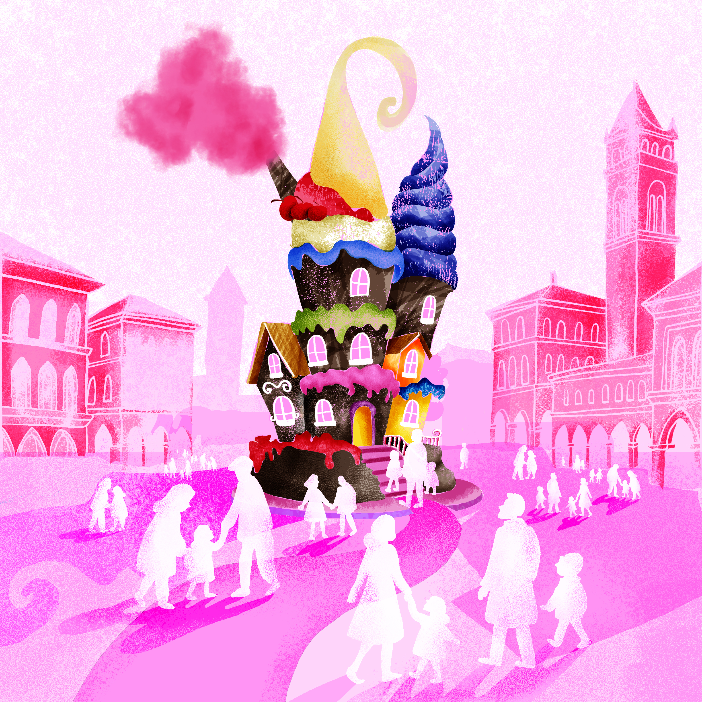
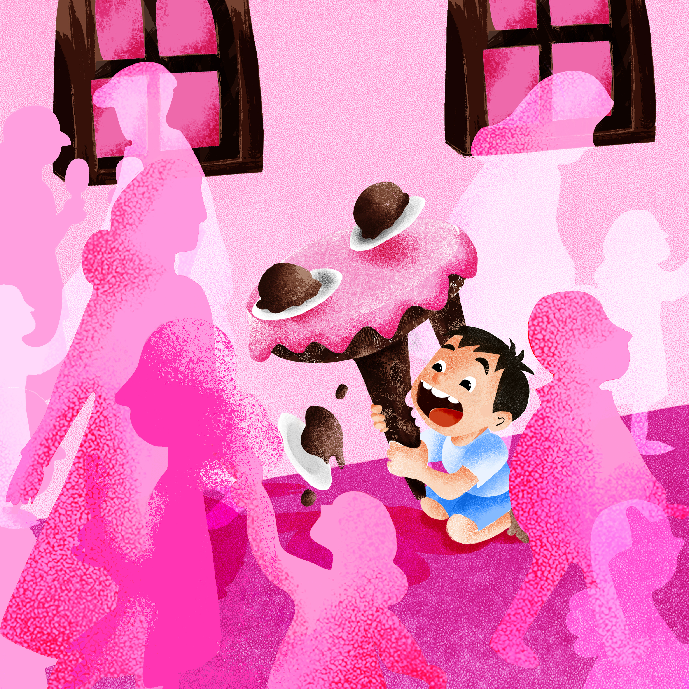
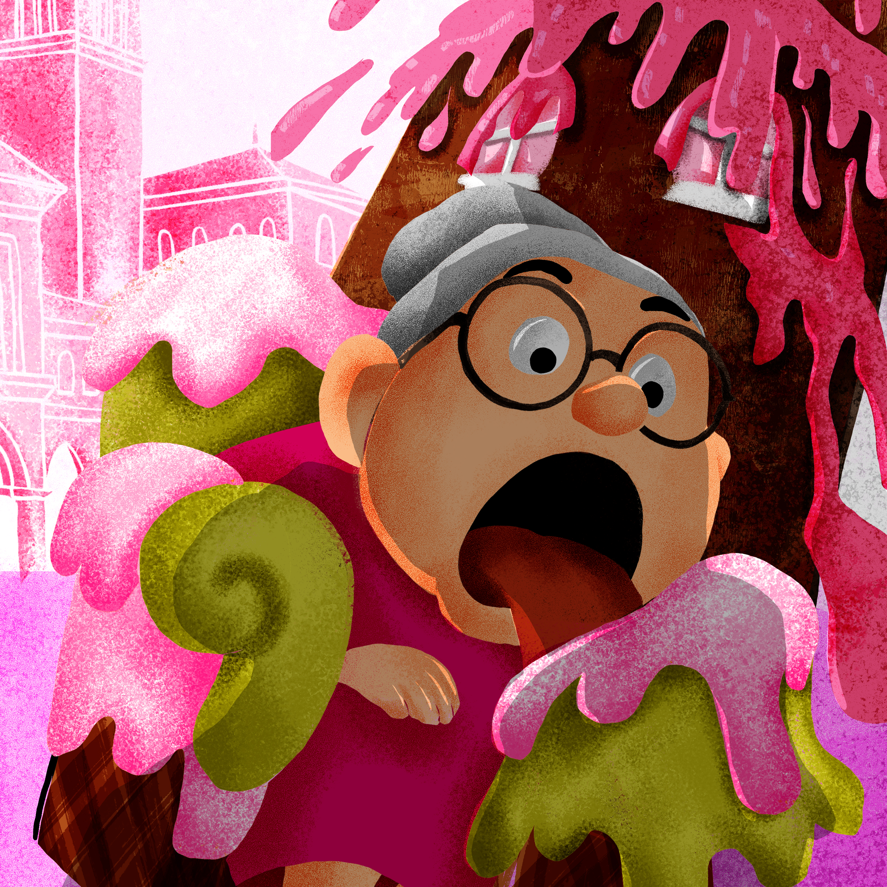

A sweet, imaginative world where fantasy meets everyday curiosity
Candy Castle This vibrant sequence tells a playful children's story set in a candy-colored town where a magical ice cream house appears. Each scene bursts with saturated colors, soft textures, and whimsical characters. The narrative unfolds with excited townspeople — from curious kids to surprised adults — interacting with the edible structure. The illustrations blend humor and exaggeration in a stylized, almost theatrical way, using a consistent pink-toned palette and dynamic compositions to guide the viewer through the joyful chaos. It's a sweet, imaginative world where fantasy meets everyday curiosity.



